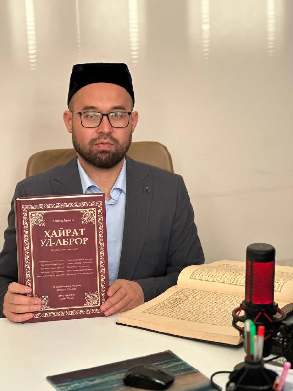

Tarjimai hol
Akrom Malik haqida
Adib, shoir, navoiyshunos olim. Filologiya fanlari bo‘yicha falsafa doktori (PhD). Mumtoz merosimizni bugungi o‘quvchiga yetkazish yo‘lida.
Akrom Malik (Akrom Malikov) 1991-yil 1-yanvarda Toshkent viloyatining Piskent tumanida tug‘ilgan. Ona tomondan bobokaloni mulla Olim — naqshbandiya sulukining murshidlaridan bo‘lib, sho‘ro davrida xalqni dinga va axloqqa irshod qilgan; bu ilmiy-ma’naviy muhit Akrom Malik ijodining ildizi hisoblanadi.
Adabiyotga she’riyat orqali kirib kelgan. Dastlabki yillarda jurnalist va publitsist sifatida faoliyat yuritgan. 2016–2020-yillarda ozodlikdan mahrum etilgan; «Halqa» qissasi ana shu yillarda yozilgan — muallifning o‘zi aytganidek, «bu kitob qamoqda tug‘ildi, ozodlikda voyaga yetdi». 2020-yil 27-avgustda ozodlikka chiqqan.
2021-yilda «Halqa» va «Jangchi» qissalari nashr etildi va xalq orasida keng tarqaldi. O‘sha yili respublika «Ilhom» mukofoti tanlovida birinchi o‘rinni egalladi. «Halqa» keyinchalik bir necha bor qayta nashr qilindi; 2025-yilda kitobning chop etilishiga rasman tavsiya berildi.
Navoiyshunos sifatida hazrat Alisher Navoiyning «Hayrat ul-abror» dostoniga birinchi to‘liq sharhni yozdi (matn, nasriy bayon, sharh va lug‘at). Sharh 2024-yil oxirida «Tavfiqnashr»da chop etildi; 2025-yil boshida taqdimotida dostonning «Ilm» bobi asosida rejissor Farohiddin Mas’ud sahnalashtirgan «Talab egalari» spektakli ilk bor ko‘rsatildi. Navoiyning «G‘aroyib us-sig‘ar» devonini nashrga tayyorlagan.
2026-yil 21-yanvarda Alisher Navoiy nomidagi Toshkent davlat o‘zbek tili va adabiyoti universitetida «Alisher Navoiy “G‘aroyib us-sig‘ar” devoni kontekstining nazariy masalalari» mavzusida filologiya fanlari bo‘yicha falsafa doktori (PhD) dissertatsiyasini himoya qildi.
2025-yildan yoshlarga eski o‘zbek (mumtoz) yozuvini o‘rgatadigan «Mumtoz alifbo tahsili» onlayn kursini olib boradi: bir necha yuz kishi tahsil oldi, o‘quvchilarning bir guruhi mumtoz matnlarni mustaqil tahlil qila oladigan darajaga yetdi. 2026-yilda «Mumtoz oila» risolasini yozib, kanalda bob-bab e’lon qildi va kitob holida nashr ettirdi; «Mumtoz suhbatlar» video loyihasini boshladi.
Piskent tumani Axborot-kutubxona markazi va Muzayyana Alaviya nomidagi adabiyot to‘garagi kabi maskanlarda ijodiy uchrashuvlar o‘tkazadi, kitob taqdimotlari va ma’rifiy suhbatlarda qatnashadi.

Faoliyat yo‘nalishlari
- IlmNavoiyshunoslik«Hayrat ul-abror», «G‘aroyib us-sig‘ar» tadqiqi
- IjodNasr va nazmQissalar, she’rlar, risolalar, maqolalar
- Ta’limMumtoz alifbo tahsiliEski yozuv va qo‘lyozmalarni o‘qish
- MediaTelegram va YouTube@AkromMalikUz, «Mumtoz suhbatlar»
Yillar
Asosiy sanalar
- 1991Piskent tumanida tug‘ildi
Toshkent viloyati, 1-yanvar.
- 2016 — 2020Ozodlikdan mahrum etilgan yillar
«Halqa» qissasi shu davrda yozildi. 2020-yil 27-avgustda ozod etildi.
- 2021«Halqa» va «Jangchi» nashr etildi
Respublika «Ilhom» mukofoti tanlovida 1-o‘rin (20-may, Adiblar xiyoboni).
- 2024«Hayrat ul-abror» sharhi
Dostonga birinchi to‘liq sharh «Tavfiqnashr»da chop etildi. Telegram kanal ish boshladi.
- 2025Taqdimot va tahsil
«Hayrat ul-abror» sharhi taqdimoti, «Talab egalari» spektakli. «Mumtoz alifbo tahsili» onlayn kursi boshlandi. «Halqa» yangi nashrga ruxsat oldi.
- 2026PhD, «Mumtoz oila», «Mumtoz suhbatlar»
21-yanvar — dissertatsiya himoyasi. Aprel–sentabr — «Mumtoz oila» risolasi. Oktabr — «Mumtoz suhbatlar» loyihasi va tahsilning 5-mavsumi. Noyabr — «Mumtoz oila» kitobi.
Har qanday kitobni o‘qib ketaverish bu ilm emas. Kitob o‘qishning Turkistonda ming yildan ortiq tarixga ega madaniyati bor.
— «Kitob va kitobxonlik» maqolasidan
Maktub yo‘llang
Savollaringiz, takliflaringiz yoki uchrashuvga taklifnomangizni bot orqali yuborishingiz mumkin.